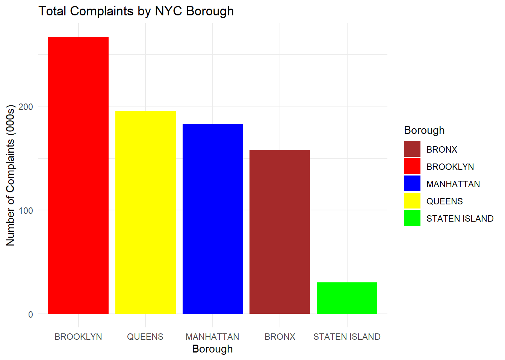
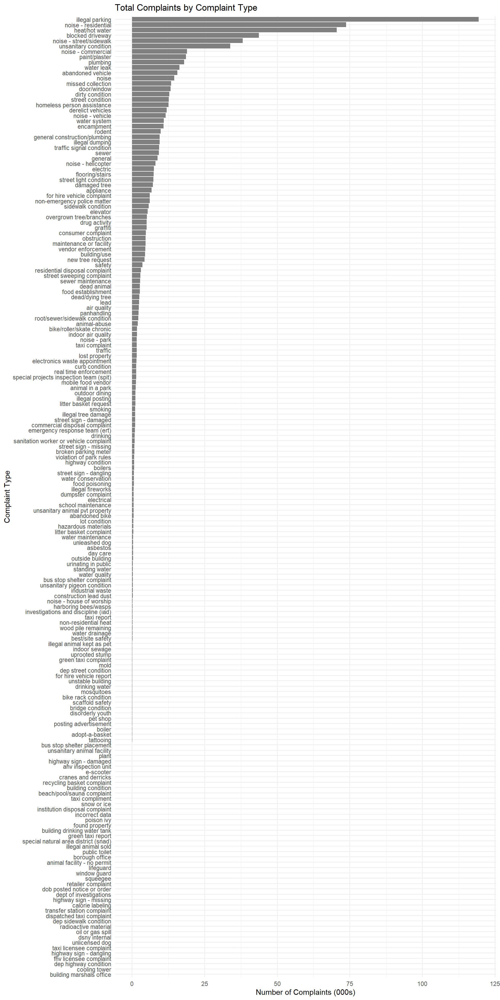
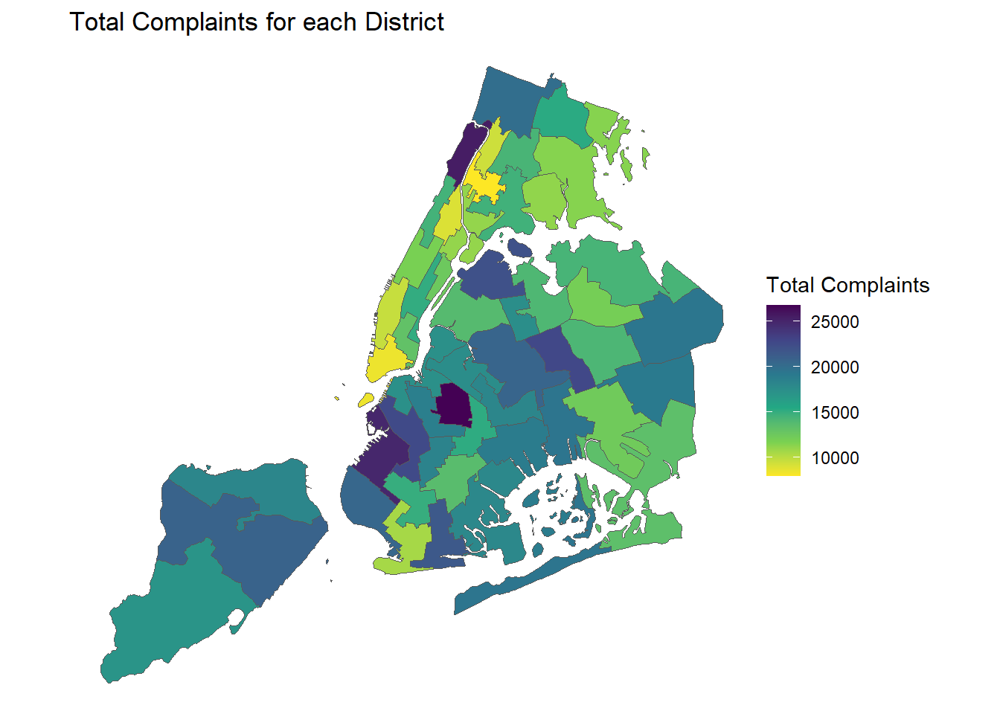
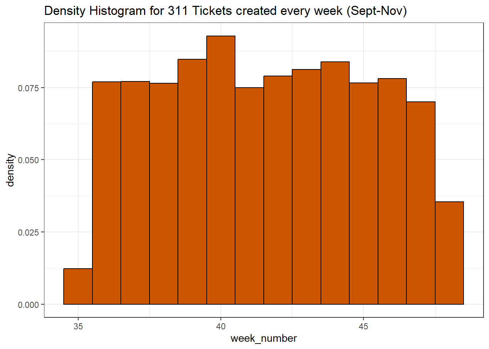

Code
options(warn = -1)
library(ggplot2)
library(dplyr)
library(lubridate)
library(nycgeo)
library(ggridges)
library(vcd)
library(sf)
library(tidyverse,warn.conflicts = FALSE)options(warn = -1)
library(ggplot2)
library(dplyr)
library(lubridate)
library(nycgeo)
library(ggridges)
library(vcd)
library(sf)
library(tidyverse,warn.conflicts = FALSE)# service_data = read_csv("C:\\Users\\varun\\Downloads\\311_Service_Requests_from_20230901_to_20231129.csv",show_col_types = FALSE)
service_data = read_csv('I:/My Drive/MSDS/Study/Fall23/EDAV/Homework/final_project/311_Service_Requests_from_20230901_to_20231129.csv', show_col_types = FALSE)Since “Facility Type”, “Vehicle Type”, “Due Date” columns are all having >90% missing values (missing value analysis), we will remove them.
From the dataset description, they refer to…
Facility Type: If available, this field describes the type of city facility associated to the SR
Vehicle Type: If the incident is a taxi, this field describes the type of TLC vehicle.
Due Date: Date when responding agency is expected to update the SR. This is based on the Complaint Type and internal Service Level Agreements (SLAs).
“Landmark” has >40% missing values. But since other address columns (eg. Longitude, Latitude, Incident Address) are proxies of it, we can remove “Landmark”.
Landmark: If the incident location is identified as a Landmark the name of the landmark will display here
Community Boards (each taking charge of 1 Community District, or CD), together with the City Council Districts, handle the “day-to-day processing of citizen complaints and requests for municipal services”. At the sub-borough level, we will look at how well each CD manages their municipal issues. “link”
Since we’re only looking at the New York City dataset, the City column is redundant, and can be removed too.
There are some rows with Borough and Status values being “Unspecified”. But they take up such a small % of the total number of rows (~0% from missing value analysis), so we will remove these rows too.
service_data <- service_data[, !(colnames(service_data) %in% c("Vehicle Type", "Due Date", "Facility Type", "Landmark", "City"))]
# see count of number of values. in Borough, Status column
table(service_data[["Borough"]])
BRONX BROOKLYN MANHATTAN QUEENS STATEN ISLAND
157918 266927 183142 195532 30344
Unspecified
3362 table(service_data[["Status"]])
Assigned Closed In Progress Open Pending Started
4203 734515 49275 47374 534 885
Unspecified
439 # remove rows with Borough / Status = "Unspecified"
service_data <- service_data[!grepl("Unspecified", service_data$Borough),]
service_data <- service_data[!grepl("Unspecified", service_data$Status),]
# convert these columns to lower case, to commonalize similar texts that have different casing
service_data <- service_data %>%
mutate_at(vars(c(`Street Name`, `Incident Address`, `Complaint Type`)), tolower)# library(ggplot2)
library(forcats)
# library(dplyr)
# specify colors for boroughs
custom_colors <- c("QUEENS" = "yellow", "MANHATTAN" = "blue", "BRONX" = "brown", "STATEN ISLAND" = "green", "BROOKLYN" = "red")
# plot bar chart
ggplot(service_data %>%
group_by(Borough) %>% # to include another dimension (but it tends to be too cluttered), add eg: , `Complaint Type`
summarise(Total_Complaints = n()),
aes(x = reorder(Borough, -Total_Complaints), y = Total_Complaints/1000, fill = Borough)) +
geom_bar(stat = "identity") +
labs(title = "Total Complaints by NYC Borough",
x = "Borough",
y = "Number of Complaints (000s)") +
scale_fill_manual(values = custom_colors) +
theme(axis.text.x = element_text(angle = 45, hjust = 1)) +
theme_minimal()
Comments:
Brooklyn appears to receive the most 311 complaints, followed by Queens, Manhattan, the Bronx. Staten Island seems to receive the least complaints.
ggplot(service_data %>%
# mutate(`Complaint Type` = tolower(`Complaint Type`)) %>%
group_by(`Complaint Type`) %>%
summarise(Total_Complaints = n()),
aes(x = Total_Complaints/1000, y = reorder(`Complaint Type`, Total_Complaints), fill = `Complaint Type`)) +
geom_col(position = position_dodge(width = 20)) +
labs(title = "Total Complaints by Complaint Type",
x = "Number of Complaints (000s)",
y = "Complaint Type") +
scale_fill_manual(values = custom_colors) +
theme(axis.text.y = element_text(vjust = 0.5)) + # Adjust hjust and vjust as needed
theme_minimal()
Comments:
On an aggregate level across all boroughs, the most common complaints range from illegal parking, noise in residential spaces, (presumably, the lack of) hot water, to also blocked driveways. In general, noise/cleanliness/water issues are the most frequent complaints, as seen from the top 10-20 bars.
Towards the bottom of the bar plot, we see that certain issues amount to fewer cases of complaints. These include highway/snow/oil spill issues. This is understandable, given that they are less “day-to-day” issues.
To drill in further, we can facet by boroughs. However, there are clearly too many complaint types. Focusing on just the top 5, for each borough…
library(tidytext)
service_data_top <- service_data %>%
# mutate(`Complaint Type` = tolower(`Complaint Type`)) %>%
group_by(Borough, `Complaint Type`) %>%
summarise(Total_Complaints = n()) %>%
group_by(Borough) %>%
top_n(5, wt = Total_Complaints) %>%
arrange(Borough, desc(Total_Complaints)) %>%
mutate(`Complaint Type` = factor(`Complaint Type`, levels = unique(`Complaint Type`)))
# Get a vector of unique Boroughs ordered by the total complaints
ordered_boroughs <- service_data_top %>%
arrange(Borough) %>%
group_by(Borough) %>%
summarise(total_complaints = sum(Total_Complaints)) %>%
arrange(desc(total_complaints)) %>%
pull(Borough)
# Use reorder_within to sort bars within each facet
ggplot(service_data_top, aes(x = Total_Complaints, y = reorder_within(`Complaint Type`, Total_Complaints, Borough), fill = `Complaint Type`)) +
geom_col() +
labs(title = "Top 5 Complaint Types by Borough",
x = "Number of Complaints",
y = "Complaint Type") +
scale_fill_manual(values = custom_colors) +
theme_minimal() +
facet_wrap(~Borough, scales = "free_y", ncol = 1, strip.position = "bottom") +
theme(axis.text.y = element_text(vjust = 0.5)) +
theme_minimal()
Comments:
We see that again, illegal parking, lack of hot water, and residential noise rank amongst the top 5 complaints across all 5 boroughs. This would certainly be something to look out for, for anyone who’s looking to stay in these boroughs. But can we go 1 level lower, to see which streets (in these boroughs) contain many of these complaints?
We explore locations by their Street Names (eg. Seventh Avenue), not Incident Address (eg. 31 Seventh Avenue, 139 Seventh Avenue), as the latter would have too many unique categories. For the initial plots here, we do not use zip code or longitude/latitude as they are less interpretable (we will plot that on a chloropleth later).
Since the number of missing rows in Street Names is low, as seen from the missing vales analysis (~3.7% rows missing), we shall omit these missing rows from this section’s analysis.
# remove rows with missing Street Name
service_data_temp <- service_data[complete.cases(service_data$`Street Name`), ]service_data_top <- service_data_temp %>%
# mutate(`Street Name` = tolower(`Street Name`)) %>%
group_by(Borough, `Street Name`) %>%
summarise(Total_Complaints = n()) %>%
group_by(Borough) %>%
top_n(5, wt = Total_Complaints) %>%
arrange(Borough, desc(Total_Complaints)) %>%
mutate(`Complaint Type` = factor(`Street Name`, levels = unique(`Street Name`)))
# Get a vector of unique Boroughs ordered by the total complaints
ordered_boroughs <- service_data_top %>%
arrange(Borough) %>%
group_by(Borough) %>%
summarise(total_complaints = sum(Total_Complaints)) %>%
arrange(desc(total_complaints)) %>%
pull(Borough)
# Use reorder_within to sort bars within each facet
ggplot(service_data_top, aes(x = Total_Complaints, y = reorder_within(`Street Name`, Total_Complaints, Borough), fill = `Street Name`)) +
geom_col() +
labs(title = "Top 5 Complaint Types by Borough",
x = "Number of Complaints",
y = "Complaint Type") +
scale_fill_manual(values = custom_colors) +
theme_minimal() +
facet_wrap(~Borough, scales = "free_y", ncol = 1, strip.position = "bottom") +
theme(axis.text.y = element_text(vjust = 0.5)) +
theme_minimal()Comments:
We see from here some of the most complained streets in each borough, eg. Ocean Avenue in Brooklyn. But this can also be high, due to the fact that some of them are long, main roads in each Borough (eg. Broadway, Amsterdam Avenue in Manhattan). We can plot a chloropleth to get a better, geographical view of problem areas, which we shall see later.
ggplot(service_data %>%
group_by(Agency) %>%
summarise(Total_Complaints = n()),
aes(x = reorder(Agency, -Total_Complaints), y = Total_Complaints/1000, fill = Agency)) +
geom_bar(stat = "identity") +
labs(title = "Total Complaints by NYC Agencies",
x = "Agency",
y = "Number of Complaints (000s)") +
scale_fill_manual(values = custom_colors) +
theme(axis.text.x = element_text(angle = 45, hjust = 1)) +
theme_minimal()
library(knitr)
# Remove duplicates
service_data_agencies <- distinct(select(service_data, Agency, `Agency Name`))
# Display the table
kable(service_data_agencies, caption = "Agencies", format = "html")| Agency | Agency Name |
|---|---|
| NYPD | New York City Police Department |
| DOHMH | Department of Health and Mental Hygiene |
| DCWP | Department of Consumer and Worker Protection |
| DPR | Department of Parks and Recreation |
| HPD | Department of Housing Preservation and Development |
| DEP | Department of Environmental Protection |
| DOT | Department of Transportation |
| TLC | Taxi and Limousine Commission |
| DOB | Department of Buildings |
| DSNY | Department of Sanitation |
| EDC | Economic Development Corporation |
| DHS | Department of Homeless Services |
| DOE | Department of Education |
We wanted to also explore how efficient/overworked each Agency is, in managing these complaints. These could provide an indication as to the level of service a resident might expect, when living in the different parts of NYC. We chose to only factor up to 2 levels, because any more levels, and the mosaic plot would become too cluttered to read, given the huge number of categories that we have.
The final plot can be seen below:
status_order <- c("Open", "Assigned", "Pending", "Started", "In Progress", "Closed")
service_data_temp$Status <- factor(service_data_temp$Status, , levels = status_order)
contingency_table <- table(service_data_temp$Agency, service_data_temp$Status)
# Create a mosaic plot using base R
mosaicplot(contingency_table, main = "Distribution of Complaint Status by NYC Agencies", las=2)
Comments:
Note that:
The data dictionary provided did not explicitly state what each status means, but a sensible inference would be that they are ordinal categories, going from Open, to being Assigned to some agency. It would presumably stay in a Pending status, before work on it gets Started. It’ll remain In Progress, until it gets Closed by the responsible agency.
Lines that split into 3 bands, indicate 0 values for that Status tier.
We shall focus on the 2 most overworked agencies: NYPD and HPD, with the widest bars.
We can thus observe that the NYPD, even though flooded with the greatest volume of complaints, has been able to close almost all of them. This should be reassuring to residents who are concerned about safety and noise related issues, as the NYPD is the main body responsible for them.
The HPD (2nd highest workload) however, has many Open issues remaining. This is cold comfort to residents-to-be, who are seeking responsive solutions to their housing infrastructural problems. 1 consolation is that the HPD has also managed to close a large proportion of its complaints.
What about the distribution of complaints handled by Agencies, per Borough?
contingency_table <- table(service_data_temp$Borough, service_data_temp$Agency)
# Create a mosaic plot using base R
mosaicplot(contingency_table, main = "Distribution of Agencies handling complaints, by NYC Boroughs", las=2)Comments:
Putting this together with the previous plot, we see that once again, NYPD, then HPD, took up the lion’s share of the workload for complaints, across all boroughs. Residents-to-be can feel comforted that issues in their home area that are managed by the NYPD, would mostly be closed.
Queens however, ought to be slightly concerned, about the (relatively) higher proportion of police complaints that they receive.
Across all Boroughs (especially those living in the Bronx), one should also rightfully be concerned at the large amount of housing complaints that they receive in their borough. Queens’ residents-to-be can put their minds at ease, knowing that they get fewer housing complaints.
Closing complaints is great. But what about the speed at which they get closed?
service_data$`Closed Date` <- date(mdy_hms(service_data$`Closed Date`,tz=Sys.timezone()))
service_data$`Created Date` <- date(mdy_hms(service_data$`Created Date`,tz=Sys.timezone()))
service_data$Closing_Duration <- service_data$`Closed Date` - service_data$`Created Date`Complaints that get resolved the fastest
complaint_duration <- service_data %>%
group_by(`Complaint Type`) %>%
summarise(across(Closing_Duration,mean, na.rm=TRUE))
complaint_duration[order(complaint_duration$Closing_Duration, decreasing = FALSE),] %>%
slice(1:40) %>%
ggplot(aes(x = Closing_Duration, y = fct_rev(
fct_reorder(`Complaint Type`, -Closing_Duration, .desc = TRUE)
))) +
geom_point() +
xlab("Closing Duration (Days)") +
ylab("Complaint Type") +
ggtitle("Mean Time for Complaint Resolution (Days)")+
theme_bw()
Comments: We see that non-structural issues such as vehicular/sidewalk noise, drug activity, illegal fireworks/parking, generally get resolved the fastest (<1 day). This is to be expected, since the perpetrators can be fairly easily directed away.
Thankfully, many of these are day-to-day issues that can directly affect the wellbeing of residents, and the fact that they get resolved fast brings comfort to anyone who plans to stay in NYC.
Top 40 Complaints that get resolved the slowest
complaint_duration[order(complaint_duration$Closing_Duration, decreasing = TRUE),] %>%
slice(1:40) %>%
ggplot(aes(x = Closing_Duration, y = fct_rev(
fct_reorder(`Complaint Type`, Closing_Duration, .desc = TRUE)
))) +
geom_point() +
xlab("Closing Duration") +
ylab("Complaint Type") +
ggtitle("Mean Time for Complaint Resolution (Days)")+
theme_bw()
Comments: Structural issues such as sidewalk/sewer/infrastructure condition, generally get resolved the slowest (>10 days). This is to be expected, since these require more involved efforts.
However, one might be more concerned about sewage/building maintenance/taxi complaints, when planning to stay in NYC. These can impact the living conditions and transportation satisfaction of said city-dweller, and one might want to be aware of the less-easily resolved issues plaguing certain areas in NYC. We will see in the D3 graph, how all the graphs that answer these questions here, come together, to help someone decide where might be problematic areas to live in.
Resolution time for complaint tickets across Boroughs
library(ggridges)
service_data %>% na.omit(service_data) %>%
ggplot(aes(x = Borough ,y = Closing_Duration)) +
geom_boxplot() +
ggtitle("Boxplot for Ticket Closing Duration for each Borough")+
labs(
x = "Borough",
y = "Ticket Resolution Duration (Days)"
) +
theme_bw() +
coord_flip()
# ridgeline?
service_data %>%
ggplot(aes(x = Closing_Duration, y = as.factor(Borough), fill = as.factor(Borough))) +
geom_density_ridges() +
ggtitle("Ridgeline Plot for Ticket Closing Duration for each Borough") +
labs(
x = "Ticket Resolution Duration (Days)",
y = "Borough"
) +
scale_fill_manual(values = custom_colors) + # Set specific colors
theme_bw()Comments:
From the boxplots we can see that the median resolution time across different boroughs is nearly the same (Between 1-2 days). The outliers are mainly due to issues visualized in the previous Cleveland plot.
Ridgeline plots were considered too, instead of the boxplots, and we similarly see a long-tail effect, where most complaints get resolved in <5days, and very few take >10 days to close. But since most of the resolution times are close to 1-2 days, there was not a lot of additional useful information that could be derived from such a distribution.
Resolution time for tickets across Districts
service_district <- service_data %>%
group_by(`City Council Districts`) %>%
summarise(mn_cd = mean(Closing_Duration, na.rm = TRUE)) %>%
arrange(desc(mn_cd)) %>%
rename(value = mn_cd) %>%
drop_na(value) %>%
mutate(`City Council Districts` = as.character(`City Council Districts`))
nyc_boundaries(geography = "council") %>%
left_join(service_district,
by = c("council_dist_id" = "City Council Districts")) %>%
ggplot() +
geom_sf(aes(fill = value)) +
scale_fill_viridis_c(name = "Mean Resolution Time (Days)",
option = "inferno",
direction = -1) +
theme_void() +
labs(title = "How fast is the ticket resolution for each District?")Comments:
The above analysis for q5, culminates in this chloropleth map, that shows how long the various districts of NYC’s boroughs take to resolve 311 service requests.
We see that the mean complaint resolution time corroborates with the above boxplot/ridgeline plots, with the mean duration hovering below 5 days. However, the darkest colored regions, eg. north Staten Island, west Brooklyn, southwest Queens, southern Manhattan and Bronx, resolve 311 issues the slowest on average. Residents-to-be may want to keep this (and knowledge from Q3, boroughs and their types of high complaint counts, and their respective streets with high complaint counts) in mind, when deciding where to stay.
service_data$week_number <- week(ymd(service_data$`Created Date`))Density Histogram to understand the distribution of ticket creation over each week
ggplot(service_data, aes(x = week_number)) +
geom_histogram(
aes(y = after_stat(density)),
color = "black",
fill = "#CC5500",
binwidth = 1,
boundary = 0,
right = FALSE
) +
ggtitle("Density Histogram for 311 Tickets created every week (Sept-Nov)") +
theme_bw() +
scale_x_continuous(breaks = seq(min(service_data$week_number), max(service_data$week_number), by = 1))
Line plot for easy comparison of ticket creation every week across different Boroughs
aggregate(
service_data$`Complaint Type`,
by = list(service_data$Borough, service_data$week_number),
FUN = length
) %>%
rename(issue_count = x,
week_number = Group.2,
Borough = Group.1) %>%
ggplot(aes(x = week_number, y = issue_count, color = Borough)) +
geom_line() +
scale_color_manual(values = custom_colors) +
ggtitle("Tickets created in different Boroughs for each week (Sept-Nov)") +
labs(x = "Week Number", y = "Created Tickets count") +
theme_grey()
Comments:
There definitely is a pattern as week 40 has the highest ticket creation count across all the Boroughs.
Week 35 and Week 48 (omitted, explained below) have the lowest ticket counts. Why? The dataset is from Sept 01 till the Nov29. Since Sept 01 is a Friday, week 35 has only ticket counts for Friday and Saturday instead of the entire week. Similarly, the entire week data for week 48 (only Sunday till Thursday) was not used.
We now analyze week 40 to understand the type of issue causing the peak
week_40_highest <- aggregate(
service_data$`Complaint Type`,
by = list(service_data$`Complaint Type`,service_data$Borough, service_data$week_number),
FUN = length
) %>%
filter(Group.3 == 40) %>%
group_by(Group.2) %>% summarise(max_x = max(x),.groups = 'drop') %>%
arrange(desc(max_x)) %>%
rename(Borough = Group.2, Tickets = max_x)
aggregate(
service_data$`Complaint Type`,
by = list(service_data$`Complaint Type`,service_data$Borough, service_data$week_number),
FUN = length
) %>%
filter(Group.3 == 40) %>%
arrange(desc(x)) %>%
rename(Issue = Group.1,week_number = Group.3,Borough = Group.2, Tickets = x) %>%
inner_join(week_40_highest,by=c("Borough" = "Borough","Tickets" = "Tickets")) Issue Borough week_number Tickets
1 illegal parking BROOKLYN 40 3629
2 illegal parking QUEENS 40 2795
3 illegal parking MANHATTAN 40 1454
4 illegal parking BRONX 40 1445
5 illegal parking STATEN ISLAND 40 296Comment:
Although there are many issues contributing to the peak on Week 40, Illegal Parking contributes the most. This corroborates with our earlier analysis, where Illegal Parking features as 1 of the most common complaints in NYC.
A more thorough analysis would have been to explore how the distribution of the various complaint types vary across the months/weeks (perhaps via a parallel plot, or an alluvial diagram). But due to the sheer number of complaint categories, the graphs would have looked too cluttered. Hence, we focus our analysis on just aggregated views of certain weeks of interest (eg. week 40).